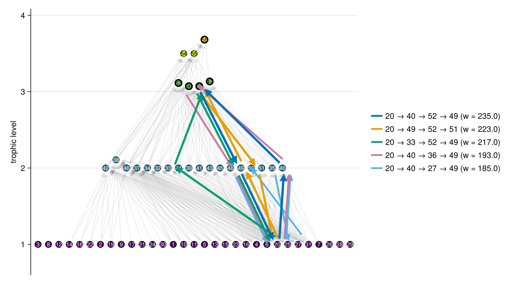
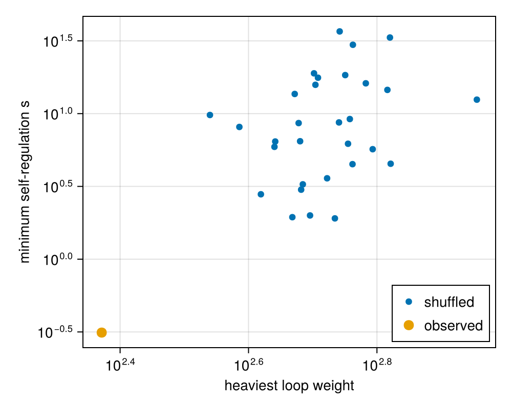
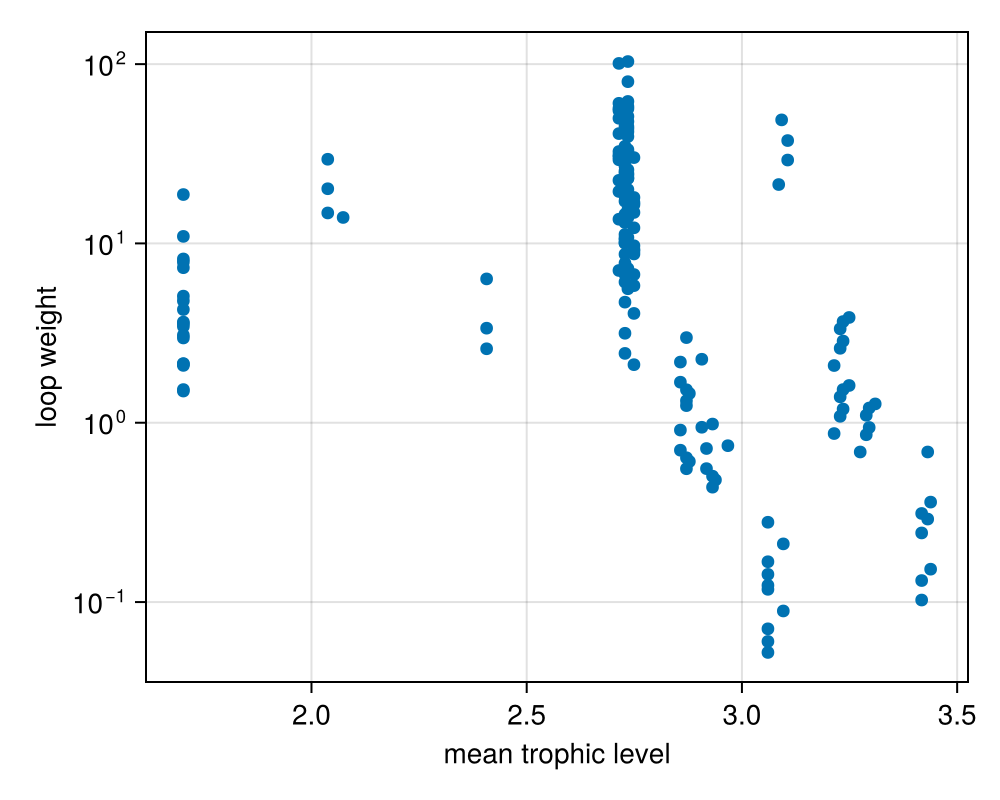

Feeding loops
A feeding loop of a community matrix J is a directed cycle of nonzero off-diagonal entries, i₁ → i₂ → ⋯ → iₖ → i₁, and its weight is the geometric mean of the absolute entries around it. Neutel, Heesterbeek & de Ruiter (2002) found that the heaviest loop of three or more species sets how much self-regulation a soil food web needs to be stable, and that long omnivory loops are light because they contain weak top-down effects. feeding_loops lists the loops of J up to a given length, heaviest first, and heaviest_loop finds the heaviest one with a pruned search that reaches longer loops.
The de Ruiter, Neutel & Moore (1995) community matrix follows from the link fluxes F and the biomasses x: predator j affects prey i by -F[i, j] / x[j] and prey i affects predator j by e[i] F[i, j] / x[i]. For Tuesday Lake with fluxes from metabolism:
using FoodWebs, CairoMakie, Random, Statistics
fw = foodweb("cheddar/tl84")
F = fluxes_from_metabolism(fw)
x = biomass(fw)
e = assimilation_efficiencies(fw)
J = -F ./ x' .+ (e .* F)' ./ x'
loops = feeding_loops(J; min_length = 3, max_length = 4)
length(loops), heaviest_loop(J)(15000, (species = [20, 40, 52, 49], links = [(20, 40), (40, 52), (52, 49), (49, 20)], length = 4, sign = 1, weight = 235.14672714056266))Each loop is a named tuple with its species in loop order, the links of J around it, its length, sign and weight. Loops of three or more species appear in both directions, which run through different entries; both_directions = false keeps the heavier one. loopplot draws loops over the web, each as a chain of arrows in loop order:
top = feeding_loops(J; min_length = 3, max_length = 4, both_directions = false)[1:5]
fig, ax = loopplot(fw, top; size = (900, 500))
fig
Self-regulation and loop weight
min_self_regulation is Neutel's stability measure: the smallest s for which the off-diagonal part of J with diagonal -s d is stable. Here d is each species' metabolic rate 0.71 M^-0.25. Shuffling the top-down entries among the links, and the bottom-up entries among the links, keeps the strengths and the web but breaks their pattern. The shuffled matrices have heavier loops and need from 6 to over 100 times as much self-regulation:
d = 0.71 .* fw.traits["M"] .^ -0.25
links = [(i, j) for i in axes(F, 1), j in axes(F, 2) if i != j && F[i, j] > 0]
function shuffled(rng, J, links)
K = zero(J)
down, up = shuffle(rng, [J[i, j] for (i, j) in links]), shuffle(rng, [J[j, i] for (i, j) in links])
for (k, (i, j)) in enumerate(links)
K[i, j] += down[k]
K[j, i] += up[k]
end
return K
end
rng = Xoshiro(1)
shuffles = [shuffled(rng, J, links) for _ in 1:30]
fig = Figure(size = (500, 400))
ax = Axis(fig[1, 1]; xlabel = "heaviest loop weight", ylabel = "minimum self-regulation s", xscale = log10, yscale = log10)
scatter!(ax, [heaviest_loop(K; max_length = 6).weight for K in shuffles], [min_self_regulation(K; scale = d) for K in shuffles]; label = "shuffled")
scatter!(ax, [heaviest_loop(J; max_length = 6).weight], [min_self_regulation(J; scale = d)]; label = "observed", markersize = 14)
axislegend(ax; position = :rb)
fig
Species and entries of loops
loop_membership marks the species in each loop and loop_mask the entries of J on any of a set of loops, so an analysis can change strengths inside the loops and outside them separately. Here the entries of the 20 heaviest loops are shuffled among themselves, and separately the other off-diagonal entries among themselves, each time keeping top-down and bottom-up entries apart. The median self-regulation needed over 30 shuffles of each, against the observed s:
S = size(J, 1)
inside = loop_mask(feeding_loops(J; min_length = 3, max_length = 4)[1:20], S)
outside = [i != j && J[i, j] != 0 && !inside[i, j] for i in 1:S, j in 1:S]
function scramble(rng, J, mask)
K = copy(J)
for sgn in (-1, 1)
entries = findall(mask .& (sign.(J) .== sgn))
K[entries] = shuffle(rng, J[entries])
end
return K
end
rng = Xoshiro(2)
(
entries = (inside = count(inside), outside = count(outside)),
observed = min_self_regulation(J; scale = d),
inside = median(min_self_regulation(scramble(rng, J, inside); scale = d) for _ in 1:30),
outside = median(min_self_regulation(scramble(rng, J, outside); scale = d) for _ in 1:30),
)(entries = (inside = 38, outside = 488), observed = 0.31297123146941885, inside = 1.5611987736774608, outside = 6.418442355468869)Shuffling the 38 entries of the heaviest loops raises the self-regulation needed fivefold, and shuffling the 488 other entries twentyfold.
The heaviest loops sit low in the web, as Neutel et al. (2002) report. Across the loops of three species, weight falls with the mean trophic level of the species in the loop:
levels = trophic_levels(fw)
triangles = feeding_loops(J; min_length = 3, max_length = 3, both_directions = false)
fig = Figure(size = (500, 400))
ax = Axis(fig[1, 1]; xlabel = "mean trophic level", ylabel = "loop weight", yscale = log10)
scatter!(ax, [mean(levels[l.species]) for l in triangles], [l.weight for l in triangles])
fig
FoodWebs.feeding_loops — Function
feeding_loops(J; min_length = 2, max_length = 5, both_directions = true, limit = 10^6)Every feeding loop of the community matrix J with min_length to max_length species, heaviest first. A loop is a directed cycle i₁ → i₂ → ⋯ → iₖ → i₁ of nonzero off-diagonal entries, and its weight is the geometric mean |J[i₁, i₂] J[i₂, i₃] ⋯ J[iₖ, i₁]|^(1/k) of its entries (Neutel, Heesterbeek & de Ruiter 2002). A predator and its prey form a loop of length 2. Longer loops are counted in both directions around the same species, since each direction takes a different set of entries: around an omnivory triangle, one direction runs through two top-down effects and one bottom-up effect, the other through one top-down and two bottom-up. both_directions = false keeps only the heavier direction around each set of species.
Each loop is a named tuple with:
species: the species in loop order, starting from the lowest index;links: the entries(i₁, i₂), (i₂, i₃), …, (iₖ, i₁)ofJaround the loop;length,sign(of the product of its entries) andweight.
The number of loops grows exponentially with their length, so max_length caps the search, and more than limit loops throws an ArgumentError. loop_membership and loop_mask give the species and entries of a set of loops, and loopplot draws them.
FoodWebs.heaviest_loop — Function
heaviest_loop(J; min_length = 3, max_length = 8)The heaviest of the feeding_loops of J with min_length to max_length species, or nothing when J has none. Loops of two species, a predator and its prey, are left out by default, as in Neutel, Heesterbeek & de Ruiter (2002). When several loops tie, it returns one of them.
Karp's (1978) algorithm first finds the loop with the largest mean log entry over all lengths, in time proportional to the number of species times the number of entries. When that loop has min_length to max_length species it is the answer. Otherwise its weight bounds every loop, and a depth-first search looks for the heaviest loop within the lengths. The search drops a partial loop when even the largest entry of J on every remaining step would leave it lighter than the heaviest loop found so far, and stops once a loop reaches Karp's bound, so it reaches longer loops than feeding_loops can list. With the default min_length = 3, Karp's loop is often a predator and its prey, and then the search does the work.
FoodWebs.loop_membership — Function
loop_membership(loops, S)A Boolean matrix with one row per species and one column per loop, true where the species is in the loop. Its row sums count the loops each species is in.
FoodWebs.loop_mask — Function
loop_mask(loops, S)A Boolean S × S matrix, true at the entries of a community matrix on any of loops. Entries with the mask set lie inside the loops and the other nonzero off-diagonal entries outside them, so J[loop_mask(loops, S)] .*= c scales the interaction strengths inside the loops alone.
FoodWebs.min_self_regulation — Function
min_self_regulation(J; scale = ones(size(J, 1)), tol = 1e-10)The smallest s for which the off-diagonal entries of J with diagonal -s * scale are stable: the minimal intraspecific interaction strength of Neutel, Heesterbeek & de Ruiter (2002), relative to scale, such as each species' specific death rate. The diagonal of J is ignored. With equal scale this is the spectral_abscissa of the off-diagonal part divided by the scale. In general it is found by bisection, to relative tolerance tol, between 0 and an s large enough to be stable, and is the boundary of the stable range when stability persists as s grows. The off-diagonal part has trace 0, so its spectral abscissa is at least 0; when it is 0, as for a food chain, any positive s is stable and this returns 0.
FoodWebs.loopplot — Function
loopplot(web, loops; kwargs...)
loopplot!(ax, web, loops; kwargs...)Draw loops, such as the heaviest few from feeding_loops, over a faded foodwebplot of web. Each loop is a closed chain of arrows through its species in loop order, in its own colour from palette (by default Makie.wong_colors()) and offset to the right of its direction, so loops on the same species stay apart. The arrow from i to j stands for the entry J[i, j] of the loop, the effect of j on i. Arrow widths scale with the loop weights, the heaviest at linewidth (default 4), and the kth loop sits spacing * k pixels (default 3) to the right. The web's links are faded to edgealpha (default 0.08). Requires Makie: load a Makie backend such as CairoMakie to enable it. loopplot returns the figure and axis, with a legend of the loops' species and weights; loopplot! draws into an existing axis. Other keywords go to foodwebplot!.
FoodWebs.loopplot! — Function
loopplot!(ax, web, loops; kwargs...)Draw loops over web into the Makie axis ax; see loopplot.
References
- de Ruiter, P. C., Neutel, A.-M. & Moore, J. C. Energetics, patterns of interaction strengths, and stability in real ecosystems. Science 269, 1257–1260 (1995).
- Neutel, A.-M., Heesterbeek, J. A. P. & de Ruiter, P. C. Stability in real food webs: weak links in long loops. Science 296, 1120–1123 (2002).
- Neutel, A.-M. et al. Reconciling complexity with stability in naturally assembling food webs. Nature 449, 599–602 (2007).